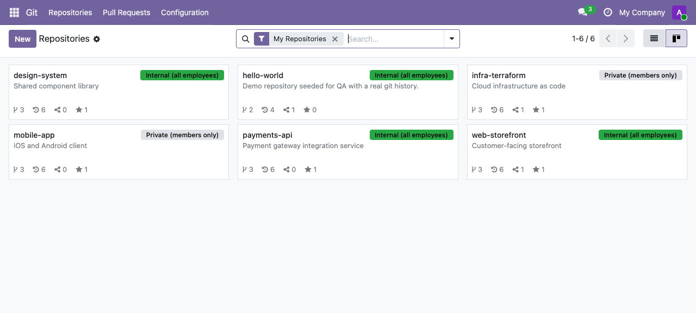
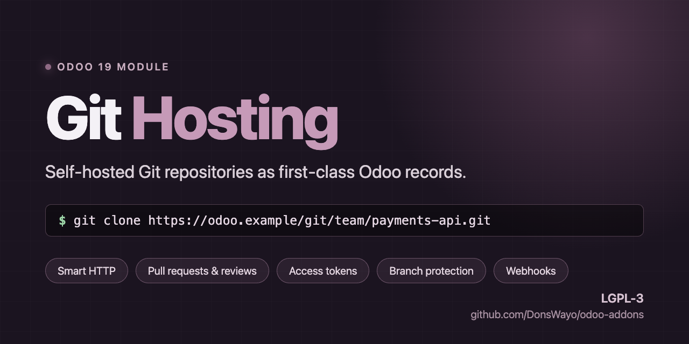
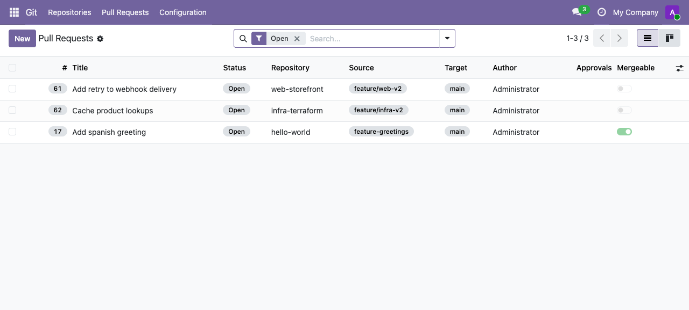
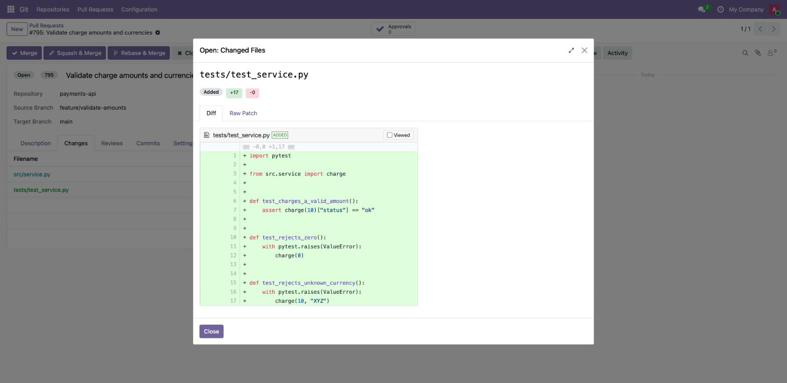
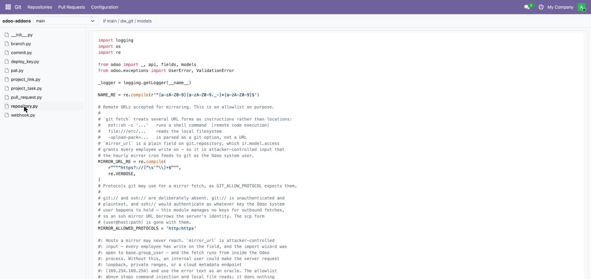
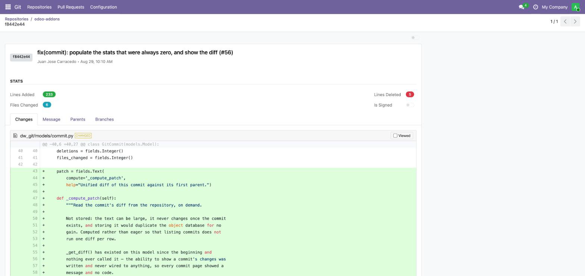
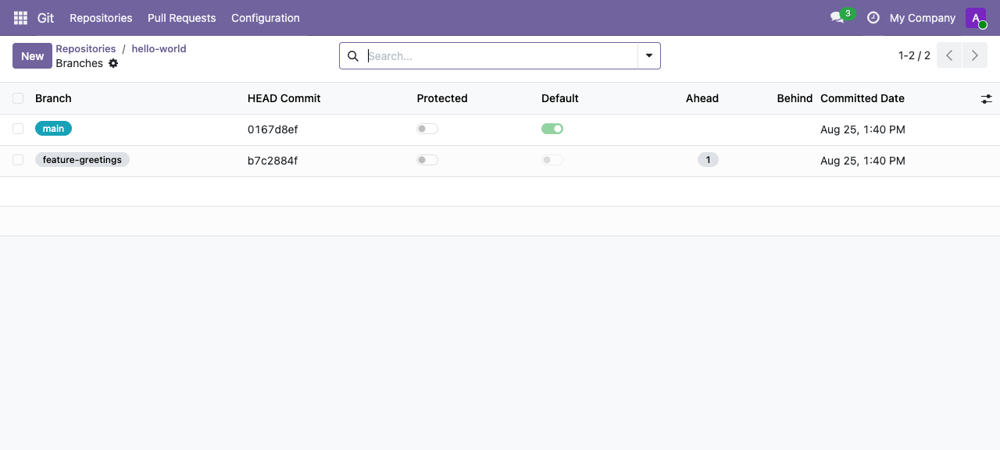
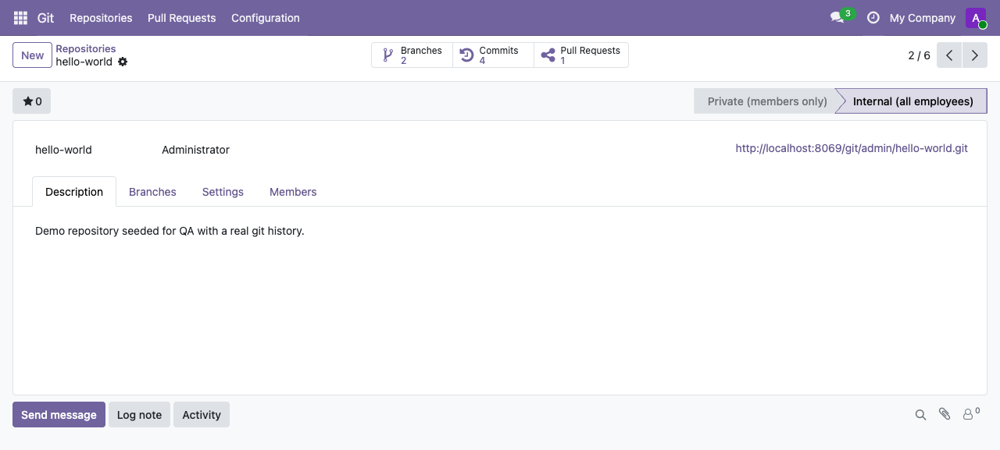

Your repositories at a glance
Branches, commits, open pull requests, stars and last activity, in the list and kanban views you already know how to filter, group and share.


Clone, push and review code against your own Odoo server. No separate Git service to run, no second set of accounts to manage, no SSO to wire up — access is decided by the users, groups and record rules you already have.

Most teams running Odoo already have every developer in the database, organised into groups, with a permission model somebody has carefully tuned. Running GitLab or Gitea alongside means maintaining that model twice — and reconciling it every time somebody joins or leaves.
Repository access follows Odoo record rules. Add somebody to a group and their Git access follows. Deactivate the user and it is gone.
No extra service, container or database. Repositories are bare Git repos on the Odoo filesystem, served by the Odoo process.
Repositories and pull requests carry Odoo chatter, followers and activities. Discussion lives beside the code, not in another inbox.
Every repository is a genuine bare Git repository on disk, served over
the Git Smart HTTP protocol by git http-backend.
git clone, git push, git fetch
and git pull all work exactly as they do anywhere else.
git clone https://alice:<token>@your-odoo/git/alice/payments-api.git
Developers authenticate with a Personal Access Token they generate themselves. No shell accounts on the server, no SSH keys to distribute, no credentials shared between people.
A push syncs branches and commits straight back into Odoo, so the records you see always reflect what is on disk.
Branches, commits, open pull requests, stars and last activity, in the list and kanban views you already know how to filter, group and share.

Draft, open, merged or closed. Merge, squash or rebase. Conflicts are detected against the real repository, not guessed — and merges are performed with Git plumbing that works on bare repos.

Diffs are computed against the merge base and rendered with syntax
highlighting. The raw unified patch sits on its own tab and applies
cleanly with git apply.

Pick a branch, walk the tree a directory at a time, and read a file as it stands at that commit. Read-only — no editing, no staging.

Every push updates the branch records and imports new commits — SHA, author, message and date — so you can search, filter and group commit history with ordinary Odoo tools.



Record rules govern the ORM and the backend UI.
_check_repo_access() governs the Git transport, the
JSON-RPC API and the portal. Both must allow an operation.
Visibility is private (owner, members and groups) or internal (readable by every employee, writable by members).
Personal Access Tokens and deploy keys are stored only as SHA-256 hashes. The secret is shown once, on the form that creates it, and there is no database column holding it afterwards — a dump or a backup discloses nothing usable.
A token never grants more than its owner already has: it resolves to the owning user, and that user's access is what gets checked.
This module tells you where its edges are. Four things it does not do yet:
git push. Anyone with repository write access can push
to a protected branch.
The full list ships with the module as
docs/LIMITATIONS.md, and the Documentation tab above
repeats it. Nothing here is a surprise you find after installing.
291 automated tests run on every change: unit tests, integration
tests against the real git binary, HTTP tests of every
endpoint, browser tours, and an end-to-end suite that clones over HTTP
with a token, pushes a commit, opens a pull request, merges it, and
checks the bare repository on disk agrees.
Continuous integration also fails the build on the warnings Odoo
happily boots through — Invalid field,
Template not found, have no access rules
— because each one hid a real defect during the module's
August 2026 audit. The audit report ships in the repository.
Odoo 19.0 · the git binary on the server ·
GitPython · a storage path owned by the Odoo user.
Licensed LGPL-3, the same licence as Odoo. Issues and questions go to the support link above.